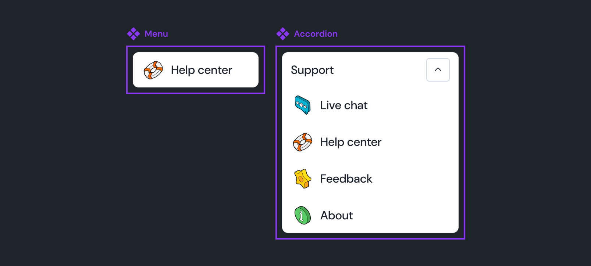
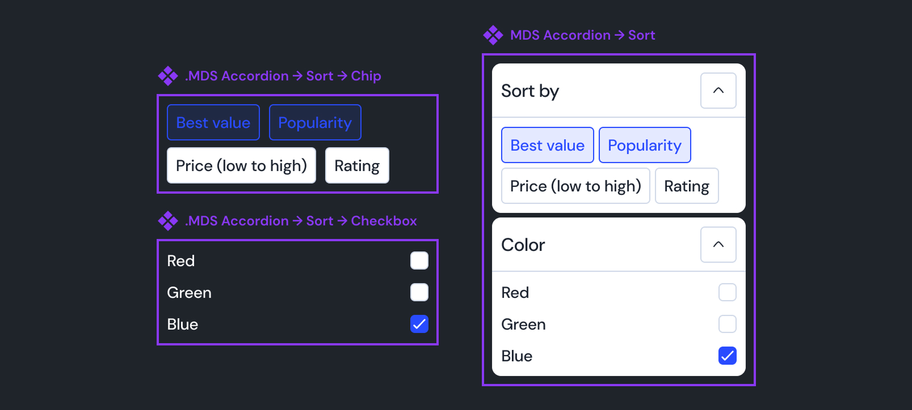
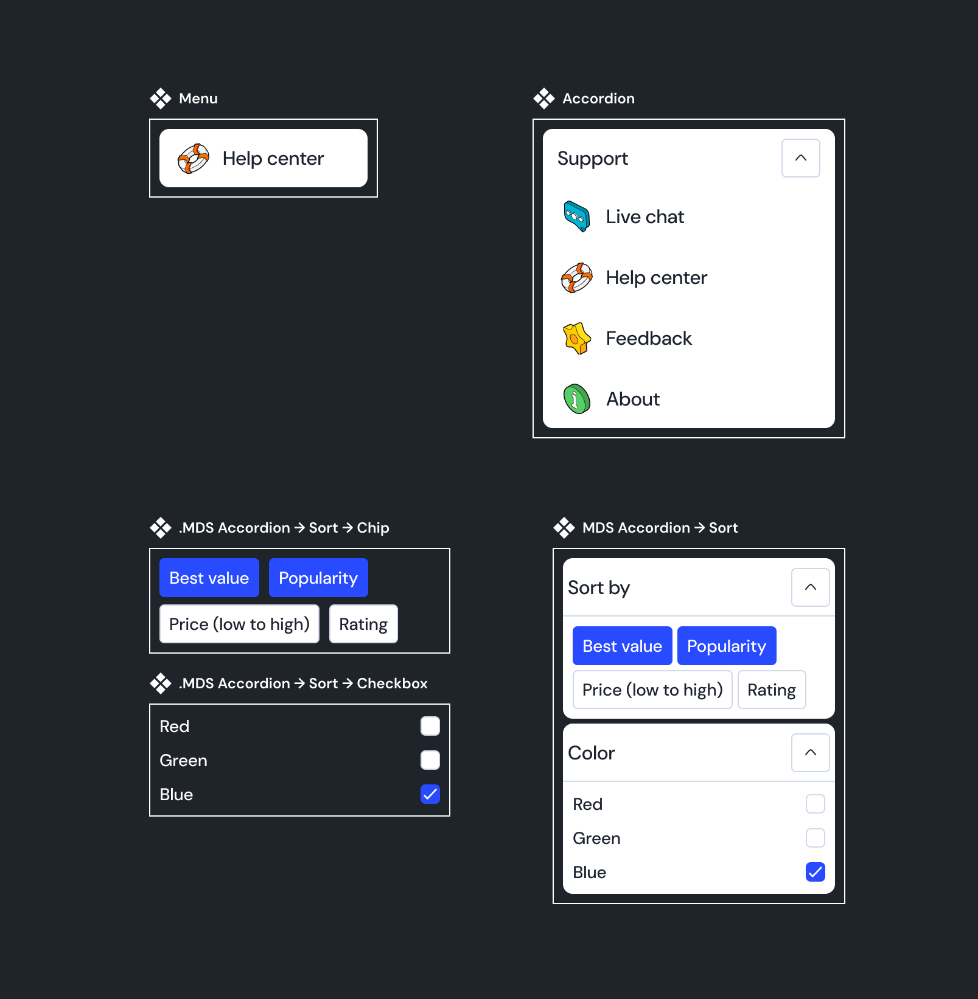
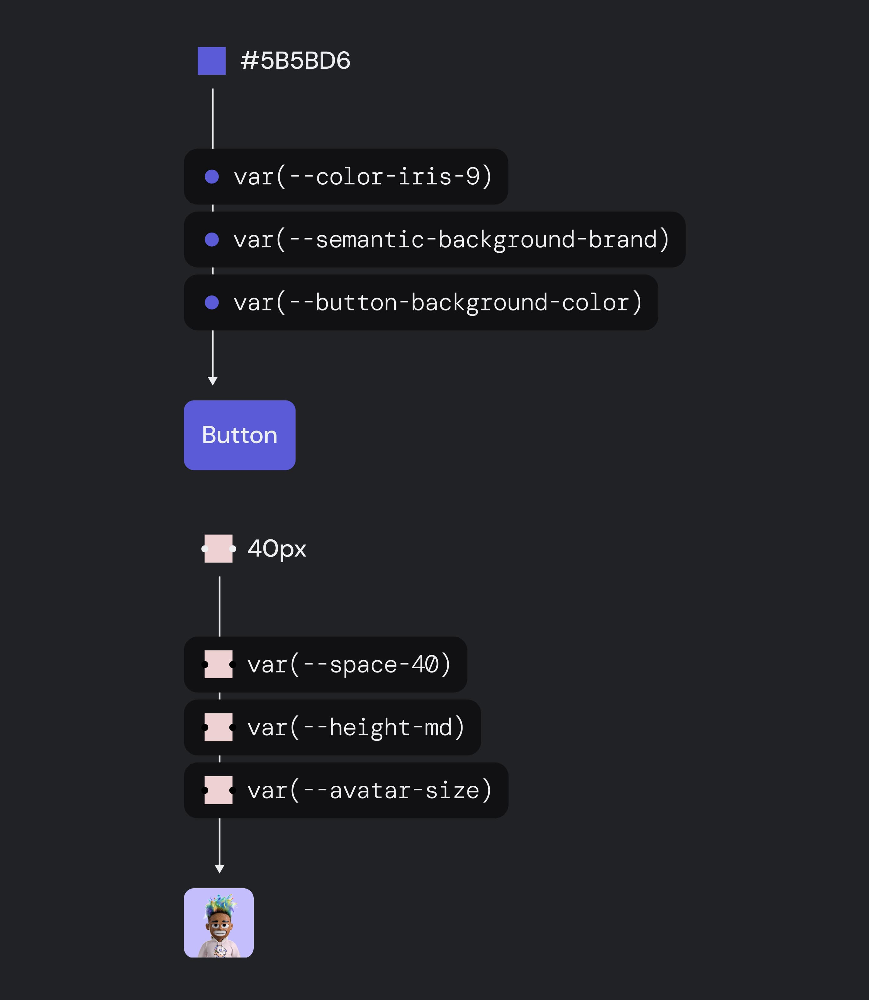
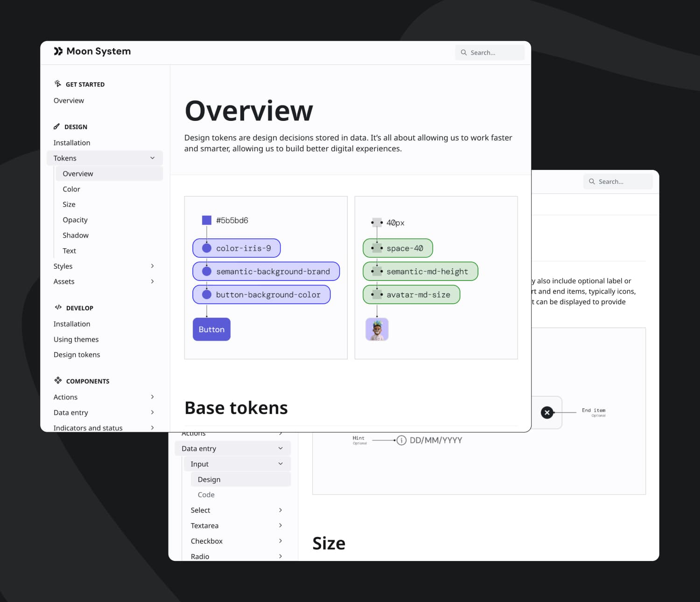
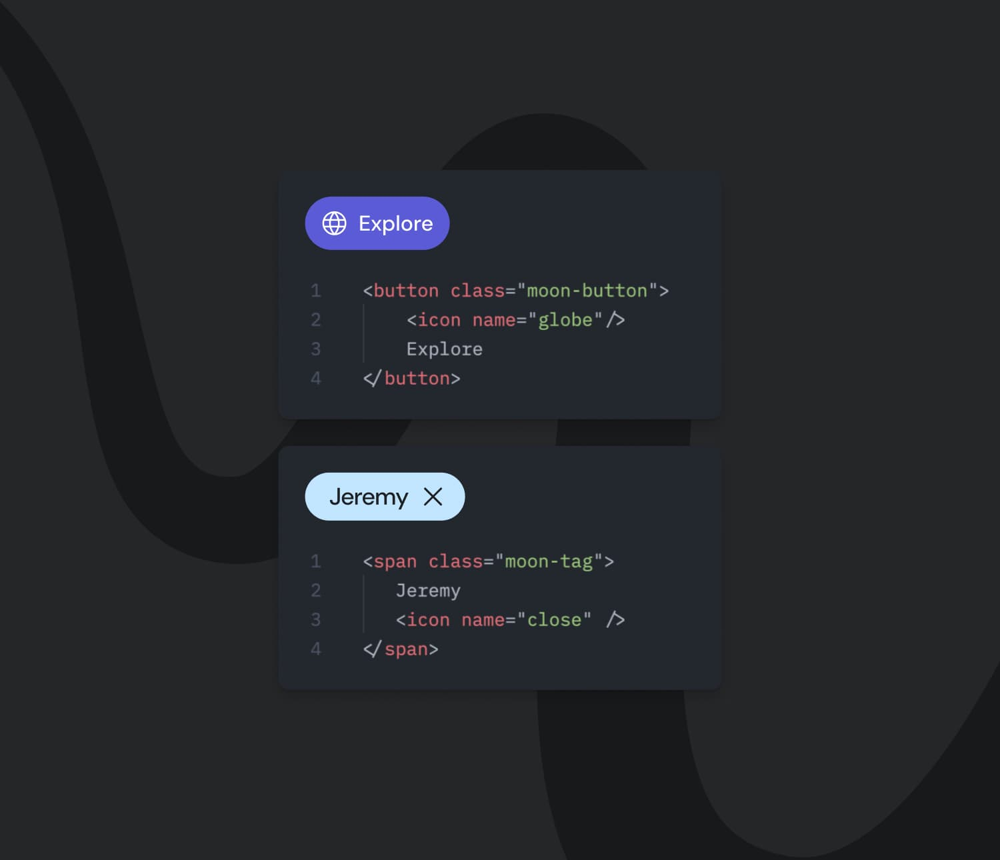
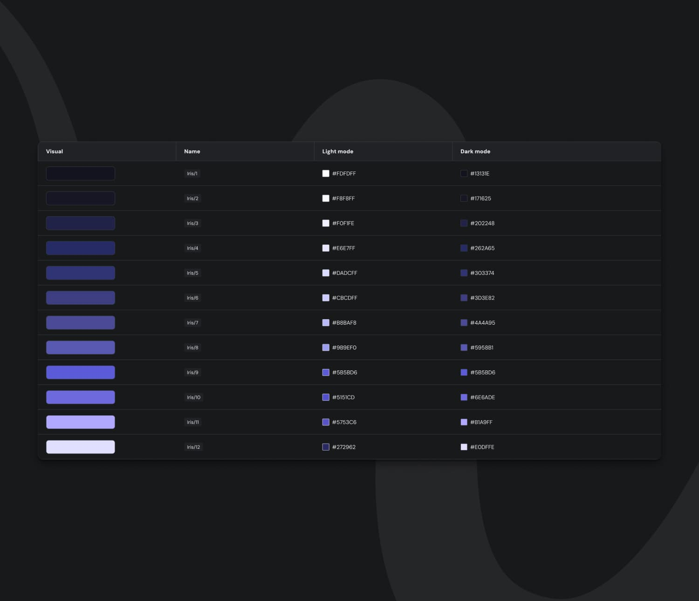

Moon Design System snapshots


Component structure and token strategy

Documentation and implementation process

Cross-team collaboration around Moon

Impact through reuse and consistency

Token and theme scalability